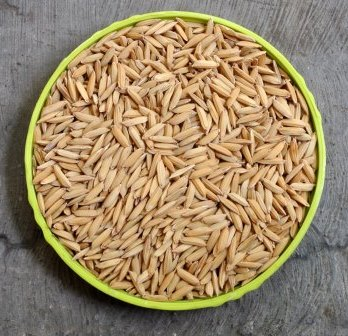

| Baris 1 kolom 1 | baris 1 kolom 2 |
| Baris 2 kolom 1 | baris 2 kolom 2 |
| Baris 1 kolom 1 | baris 1 kolom 2 |
| Baris 2 kolom 1 | baris 2 kolom 2 |
| Baris 1 kolom 1 | baris 1 kolom 2 |
| Baris 2 kolom 1 | baris 2 kolom 2 |
| No. | Nama | Npm |
| 1 | Enggal | 1817051076 |
| 2 | Dini Restiani | 1417051076 |
| 3 | Dinora Refia sari | 1517051076 |
| Bulan | Hasil Panen | |
|---|---|---|
| Padi | Kacang | |
| Januari | 500 Kg | 231 Kg |
| Februari | 342 Kg | 423 Kg |
| Maret | 432 Kg | 124 Kg |
| April | 453 Kg | 523 Kg |
| Produk Unggulan | ||
|---|---|---|
|  | ||
| Nama | Benih Padi | |
| Harga | Rp 392.000 | |
| Keunggulan |
|
|